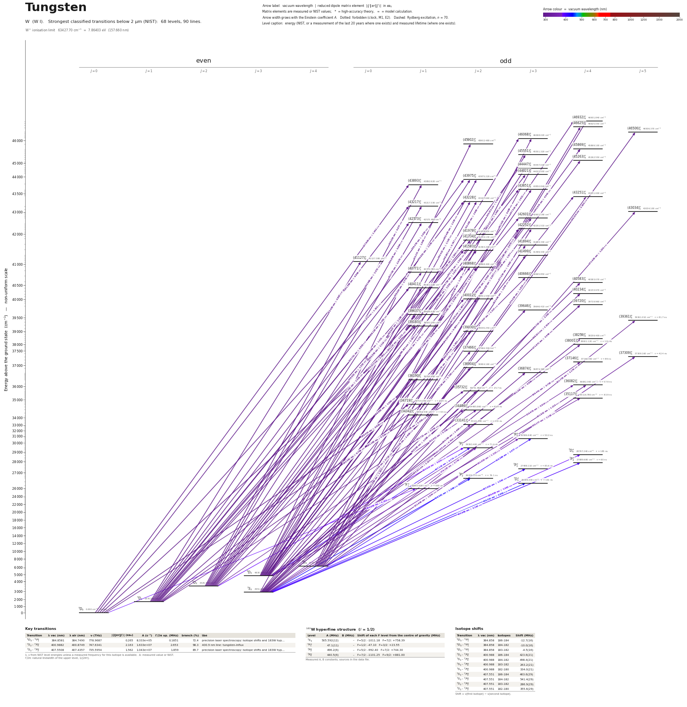

Tungsten energy level diagram
Energy levels and transitions of neutral tungsten (W I): the 90 strongest classified lines below 2 µm from the NIST Atomic Spectra Database and the 68 levels they connect, each line with its vacuum wavelength, frequency and, for 90 of them, the reduced dipole matrix element derived from the NIST transition rate. Measured lifetimes, transition rates, hyperfine constants and isotope shifts from the literature are included, each with its citation.
Hover a line or a level to isolate it, click to keep it selected. Scroll to zoom, drag to move.

Download: diagram (PDF) diagram (SVG) transitions (CSV) levels (CSV) source code

Key transitions of tungsten
| Transition | λ vac (nm) | λ air (nm) | ν (THz) | |⟨J‖er‖J′⟩| (ea₀) | A (s⁻¹) | Γ/2π up. (MHz) | branch (%) | Use |
|---|---|---|---|---|---|---|---|---|
| 5D0 – 5F°1 | 384.8581 | 384.7490 | 778.9687 | 0.265 | 8.333e+05 | 0.1851 | 72.4 | precision laser spectroscopy: isotope shifts and 183W hyp… |
| 7S3 – 7P°4 | 400.9882 | 400.8749 | 747.6341 | 2.163 | 1.633e+07 | 2.653 | 98.3 | 400.9 nm line: tungsten-influx |
| 7S3 – 7P°3 | 407.5508 | 407.4357 | 735.5954 | 1.562 | 1.043e+07 | 1.859 | 89.7 | precision laser spectroscopy: isotope shifts and 183W hyp… |
λ, ν from NIST level energies unless a measured frequency for this isotope is available. A: measured value or NIST. Γ/2π: natural linewidth of the upper level, 1/(2πτ).
183W hyperfine structure (I = 1/2)
| Level | A (MHz) | B (MHz) | Shift of each F level from the centre of gravity (MHz) |
|---|---|---|---|
| 7S3 | 505.592(12) | – | F=5/2: -1011.18 F=7/2: +758.39 |
| 5F°1 | 47.1(11) | – | F=1/2: -47.10 F=3/2: +23.55 |
| 7P°3 | 496.2(6) | – | F=5/2: -992.40 F=7/2: +744.30 |
| 7P°4 | 440.5(6) | – | F=7/2: -1101.25 F=9/2: +881.00 |
Measured A, B constants; sources in the data file.
Isotope shifts
| Transition | λ vac (nm) | Isotopes | Shift (MHz) |
|---|---|---|---|
| 5D0 – 5F°1 | 384.858 | 186-184 | -12.7(16) |
| 5D0 – 5F°1 | 384.858 | 184-182 | -10.0(16) |
| 5D0 – 5F°1 | 384.858 | 183-182 | -4.5(16) |
| 7S3 – 7P°4 | 400.988 | 186-184 | 423.6(21) |
| 7S3 – 7P°4 | 400.988 | 184-182 | 498.4(21) |
| 7S3 – 7P°4 | 400.988 | 183-182 | 263.2(21) |
| 7S3 – 7P°4 | 400.988 | 182-180 | 334.0(21) |
| 7S3 – 7P°3 | 407.551 | 186-184 | 463.6(29) |
| 7S3 – 7P°3 | 407.551 | 184-182 | 541.4(29) |
| 7S3 – 7P°3 | 407.551 | 183-182 | 286.9(29) |
| 7S3 – 7P°3 | 407.551 | 182-180 | 355.6(29) |
Shift = ν(first isotope) − ν(second isotope).
Listed W transitions below 2 µm
| Lower level | Upper level | λ vacuum (nm) | λ air (nm) | ν (THz) | Type | |⟨J‖er‖J′⟩| (ea₀) | A (s⁻¹) | Branching (%) | Source of matrix element / A |
|---|---|---|---|---|---|---|---|---|---|
| 5D0 | (43893)°1 | 227.8287 | 227.7584 | 1315.8676 | E1 | 1.042 NIST | 6.200e+07 NIST | – | NIST ASD (accuracy C) |
| 5D0 | (43217)°1 | 231.3887 | 231.3175 | 1295.6230 | E1 | 0.958 NIST | 5.000e+07 NIST | – | NIST ASD (accuracy C) |
| 5D1 | (43975)°2 | 236.3791 | 236.3068 | 1268.2699 | E1 | 1.500 NIST | 6.900e+07 NIST | – | NIST ASD (accuracy B) |
| 5D3 | (46932)°4 | 237.5193 | 237.4468 | 1262.1814 | E1 | 1.921 NIST | 6.200e+07 NIST | – | NIST ASD (accuracy C) |
| 5D1 | (43228)°2 | 240.6312 | 240.5580 | 1245.8586 | E1 | 1.540 NIST | 6.900e+07 NIST | – | NIST ASD (accuracy B) |
| 5D3 | (46068)°3 | 242.4947 | 242.4211 | 1236.2847 | E1 | 1.960 NIST | 7.800e+07 NIST | – | NIST ASD (accuracy B) |
| 5D2 | (44447)°3 | 243.1818 | 243.1081 | 1232.7913 | E1 | 1.200 NIST | 2.900e+07 NIST | – | NIST ASD (accuracy B) |
| 5D3 | (45902)°2 | 243.4720 | 243.3982 | 1231.3220 | E1 | 1.956 NIST | 1.074e+08 NIST | – | NIST ASD (accuracy A) |
| 5D3 | (45869)°4 | 243.6701 | 243.5962 | 1230.3213 | E1 | 4.043 NIST | 2.544e+08 NIST | – | NIST ASD (accuracy A) |
| 5D1 | (42573)°1 | 244.4796 | 244.4056 | 1226.2471 | E1 | 1.372 NIST | 8.700e+07 NIST | – | NIST ASD (accuracy B) |
| 5D0 | (40771)°1 | 245.2737 | 245.1994 | 1222.2772 | E1 | 1.305 NIST | 7.800e+07 NIST | – | NIST ASD (accuracy B) |
| 5D3 | (45551)°3 | 245.5716 | 245.4973 | 1220.7945 | E1 | 1.946 NIST | 7.400e+07 NIST | – | NIST ASD (accuracy B) |
| 5D4 | (46932)°4 | 245.6247 | 245.5504 | 1220.5303 | E1 | 2.237 NIST | 7.600e+07 NIST | – | NIST ASD (accuracy C) |
| 5D2 | (44021)°3 | 245.7276 | 245.6532 | 1220.0195 | E1 | 1.552 NIST | 4.700e+07 NIST | – | NIST ASD (accuracy B) |
| 5D2 | (43975)°2 | 246.0043 | 245.9299 | 1218.6471 | E1 | 1.778 NIST | 8.600e+07 NIST | – | NIST ASD (accuracy B) |
| 5D2 | (43893)°1 | 246.5052 | 246.4307 | 1216.1708 | E1 | 0.977 NIST | 4.300e+07 NIST | – | NIST ASD (accuracy C) |
| 5D2 | (43851)°3 | 246.7594 | 246.6848 | 1214.9182 | E1 | 1.837 NIST | 6.500e+07 NIST | – | NIST ASD (accuracy B) |
| 5D3 | (45263)°4 | 247.3255 | 247.2508 | 1212.1373 | E1 | 1.577 NIST | 3.700e+07 NIST | – | NIST ASD (accuracy B) |
| 5D4 | (46625)°4 | 247.4897 | 247.4149 | 1211.3330 | E1 | 2.831 NIST | 1.190e+08 NIST | – | NIST ASD (accuracy B) |
| 5D1 | (41979)°2 | 248.0877 | 248.0128 | 1208.4133 | E1 | 1.331 NIST | 4.700e+07 NIST | – | NIST ASD (accuracy C) |
| 5D4 | (46506)°5 | 248.2188 | 248.1438 | 1207.7751 | E1 | 3.505 NIST | 1.480e+08 NIST | – | NIST ASD (accuracy B) |
| 7S3 | (43228)°2 | 248.2845 | 248.2096 | 1207.4552 | E1 | 0.797 NIST | 1.680e+07 NIST | – | NIST ASD (accuracy B) |
| 5D1 | (41734)°2 | 249.6016 | 249.5264 | 1201.0837 | E1 | 1.343 NIST | 4.700e+07 NIST | – | NIST ASD (accuracy C) |
| 5D1 | (41583)°2 | 250.5455 | 250.4700 | 1196.5589 | E1 | 1.114 NIST | 3.200e+07 NIST | – | NIST ASD (accuracy C) |
| 5D2 | (43217)°1 | 250.6781 | 250.6026 | 1195.9261 | E1 | 0.864 NIST | 3.200e+07 NIST | – | NIST ASD (accuracy C) |
| 5D4 | (46068)°3 | 250.9493 | 250.8737 | 1194.6337 | E1 | 1.145 NIST | 2.400e+07 NIST | – | NIST ASD (accuracy C) |
| 5D3 | (44447)°3 | 252.4168 | 252.3409 | 1187.6884 | E1 | 1.683 NIST | 5.100e+07 NIST | – | NIST ASD (accuracy C) |
| 5D1 | (41127)°0 | 253.4399 | 253.3637 | 1182.8938 | E1 | 0.887 NIST | 9.800e+07 NIST | – | NIST ASD (accuracy B) |
| 5D2 | (42601)°3 | 254.6106 | 254.5342 | 1177.4547 | E1 | 1.172 NIST | 2.410e+07 NIST | – | NIST ASD (accuracy B) |
| 5D2 | (42573)°1 | 254.7903 | 254.7138 | 1176.6242 | E1 | 2.070 NIST | 1.750e+08 NIST | – | NIST ASD (accuracy B) |
| 5D1 | (40868)°2 | 255.1143 | 255.0378 | 1175.1298 | E1 | 1.071 NIST | 2.800e+07 NIST | – | NIST ASD (accuracy C) |
| 5D0 | (39183)°1 | 255.2114 | 255.1349 | 1174.6828 | E1 | 2.093 NIST | 1.780e+08 NIST | – | NIST ASD (accuracy B) |
| 5D3 | (43975)°2 | 255.4590 | 255.3824 | 1173.5442 | E1 | 1.330 NIST | 4.300e+07 NIST | – | NIST ASD (accuracy B) |
| 5D1 | (40771)°1 | 255.7513 | 255.6746 | 1172.2032 | E1 | 0.802 NIST | 2.600e+07 NIST | – | NIST ASD (accuracy C) |
| 5D3 | (43851)°3 | 256.2733 | 256.1965 | 1169.8154 | E1 | 1.671 NIST | 4.800e+07 NIST | – | NIST ASD (accuracy B) |
| 5D1 | (40411)°1 | 258.1256 | 258.0483 | 1161.4209 | E1 | 1.382 NIST | 7.500e+07 NIST | – | NIST ASD (accuracy B) |
| 5D3 | (43251)°4 | 260.2743 | 260.1966 | 1151.8326 | E1 | 1.080 NIST | 1.490e+07 NIST | – | NIST ASD (accuracy B) |
| 5D3 | (43228)°2 | 260.4325 | 260.3547 | 1151.1329 | E1 | 1.105 NIST | 2.800e+07 NIST | – | NIST ASD (accuracy C) |
| 5D2 | (41583)°2 | 261.3855 | 261.3075 | 1146.9361 | E1 | 1.543 NIST | 5.400e+07 NIST | – | NIST ASD (accuracy C) |
| 5D4 | (44447)°3 | 261.5905 | 261.5124 | 1146.0373 | E1 | 0.989 NIST | 1.580e+07 NIST | – | NIST ASD (accuracy C) |
| 5D1 | (39637)°1 | 263.3913 | 263.3128 | 1138.2019 | E1 | 1.326 NIST | 6.500e+07 NIST | – | NIST ASD (accuracy B) |
| 5D3 | (42601)°3 | 264.7521 | 264.6732 | 1132.3518 | E1 | 0.997 NIST | 1.550e+07 NIST | – | NIST ASD (accuracy B) |
| 7S3 | (40583)°4 | 265.7328 | 265.6538 | 1128.1724 | E1 | 2.363 NIST | 6.700e+07 NIST | – | NIST ASD (accuracy B) |
| 5D2 | (40868)°2 | 266.3622 | 266.2829 | 1125.5069 | E1 | 1.400 NIST | 4.200e+07 NIST | – | NIST ASD (accuracy B) |
| 5D3 | (42252)°3 | 267.2260 | 267.1466 | 1121.8686 | E1 | 1.603 NIST | 3.900e+07 NIST | – | NIST ASD (accuracy B) |
| 5D2 | (40666)°3 | 267.8070 | 267.7275 | 1119.4346 | E1 | 1.027 NIST | 1.590e+07 NIST | – | NIST ASD (accuracy B) |
| 7S3 | (40234)°4 | 268.2211 | 268.1414 | 1117.7066 | E1 | 2.519 NIST | 7.400e+07 NIST | – | NIST ASD (accuracy B) |
| 5D2 | (40411)°1 | 269.6465 | 269.5665 | 1111.7980 | E1 | 1.168 NIST | 4.700e+07 NIST | – | NIST ASD (accuracy B) |
| 5D4 | (43251)°4 | 270.0391 | 269.9590 | 1110.1815 | E1 | 1.823 NIST | 3.800e+07 NIST | – | NIST ASD (accuracy B) |
| 5D4 | (43034)°5 | 271.6301 | 271.5496 | 1103.6790 | E1 | 1.230 NIST | 1.390e+07 NIST | – | NIST ASD (accuracy B) |
| 7S3 | (39720)°4 | 271.9707 | 271.8901 | 1102.2970 | E1 | 2.049 NIST | 4.700e+07 NIST | – | NIST ASD (accuracy B) |
| 7S3 | (39646)°3 | 272.5158 | 272.4351 | 1100.0920 | E1 | 2.710 NIST | 1.050e+08 NIST | – | NIST ASD (accuracy B) |
| 5D2 | (40012)°2 | 272.5838 | 272.5031 | 1099.8177 | E1 | 0.941 NIST | 1.770e+07 NIST | – | NIST ASD (accuracy B) |
| 7S3 | (39030)°2 | 277.1699 | 277.0880 | 1081.6200 | E1 | 0.981 NIST | 1.830e+07 NIST | – | NIST ASD (accuracy B) |
| 5D3 | (40868)°2 | 277.4818 | 277.3999 | 1080.4041 | E1 | 1.434 NIST | 3.900e+07 NIST | – | NIST ASD (accuracy B) |
| 5D4 | (42252)°3 | 277.5297 | 277.4478 | 1080.2176 | E1 | 1.883 NIST | 4.800e+07 NIST | – | NIST ASD (accuracy B) |
| 5D4 | (41694)°3 | 281.8886 | 281.8056 | 1063.5140 | E1 | 1.824 NIST | 4.300e+07 NIST | – | NIST ASD (accuracy B) |
| 7S3 | (38259)°4 | 283.2211 | 283.1378 | 1058.5105 | E1 | 2.224 NIST | 4.900e+07 NIST | – | NIST ASD (accuracy B) |
| 5D4 | (41499)°3 | 283.4459 | 283.3626 | 1057.6708 | E1 | 1.943 NIST | 4.800e+07 NIST | – | NIST ASD (accuracy B) |
| 5D3 | (40012)°2 | 284.2403 | 284.1567 | 1054.7148 | E1 | 0.990 NIST | 1.730e+07 NIST | – | NIST ASD (accuracy B) |
| 5D0 | (34719)°1 | 288.0240 | 287.9395 | 1040.8593 | E1 | 0.928 measured | 2.433e+07 measured | 54.8 | Den Hartog, Duquette, Lawler, J. Opt. Soc. Am. B 4, 48 (1987), Table 2 |
| 5D1 | (36190)°1 | 289.6855 | 289.6006 | 1034.8896 | E1 | 1.004 NIST | 2.800e+07 NIST | – | NIST ASD (accuracy B) |
| 7S3 | (37466)°2 | 289.7290 | 289.6441 | 1034.7340 | E1 | 2.793 NIST | 1.300e+08 NIST | – | NIST ASD (accuracy D) |
| 5D0 | (34342)°1 | 291.1849 | 291.0996 | 1029.5604 | E1 | 0.529 measured | 7.667e+06 measured | 69.6 | Den Hartog, Duquette, Lawler, J. Opt. Soc. Am. B 4, 48 (1987), Table 2 |
| 5D1 | (35732)°2 | 293.5851 | 293.4993 | 1021.1432 | E1 | 0.955 measured | 1.460e+07 measured | 37.3 | Den Hartog, Duquette, Lawler, J. Opt. Soc. Am. B 4, 48 (1987), Table 2 |
| 7S3 | (36904)°2 | 294.5259 | 294.4398 | 1017.8814 | E1 | 2.609 NIST | 1.080e+08 NIST | – | NIST ASD (accuracy B) |
| 7S3 | (36874)°3 | 294.7846 | 294.6985 | 1016.9881 | E1 | 2.694 NIST | 8.200e+07 NIST | – | NIST ASD (accuracy B) |
| 5D3 | (38001)°4 | 301.4671 | 301.3792 | 994.4452 | E1 | 0.886 measured | 6.444e+06 measured | 72 | Den Hartog, Duquette, Lawler, J. Opt. Soc. Am. B 4, 48 (1987), Table 2 |
| 5D4 | (39361)°5 | 301.7349 | 301.6470 | 993.5626 | E1 | 1.176 measured | 9.273e+06 measured | 74.8 | Den Hartog, Duquette, Lawler, J. Opt. Soc. Am. B 4, 48 (1987), Table 2 |
| 7S3 | (36082)°4 | 301.8320 | 301.7441 | 993.2427 | E1 | 1.216 measured | 1.211e+07 measured | 69.9 | Den Hartog, Duquette, Lawler, J. Opt. Soc. Am. B 4, 48 (1987), Table 2 |
| 5D1 | (34719)°1 | 302.5806 | 302.4926 | 990.7853 | E1 | 0.758 measured | 1.400e+07 measured | 31.5 | Den Hartog, Duquette, Lawler, J. Opt. Soc. Am. B 4, 48 (1987), Table 2 |
| 5D1 | (34486)°2 | 304.7334 | 304.6448 | 983.7860 | E1 | 0.636 measured | 5.800e+06 measured | 38.7 | Den Hartog, Duquette, Lawler, J. Opt. Soc. Am. B 4, 48 (1987), Table 2 |
| 7S3 | (35732)°2 | 305.0578 | 304.9691 | 982.7398 | E1 | 1.098 measured | 1.720e+07 measured | 44.4 | Den Hartog, Duquette, Lawler, J. Opt. Soc. Am. B 4, 48 (1987), Table 2 |
| 5D3 | (37146)°4 | 309.4408 | 309.3510 | 968.8201 | E1 | 0.765 measured | 4.444e+06 measured | 40.2 | Den Hartog, Duquette, Lawler, J. Opt. Soc. Am. B 4, 48 (1987), Table 2 |
| 5D3 | (36082)°4 | 319.9764 | 319.8840 | 936.9204 | E1 | 0.814 measured | 4.556e+06 measured | 26.1 | Den Hartog, Duquette, Lawler, J. Opt. Soc. Am. B 4, 48 (1987), Table 2 |
| 5D2 | (34486)°2 | 320.9209 | 320.8282 | 934.1632 | E1 | 0.599 measured | 4.400e+06 measured | 28.5 | Den Hartog, Duquette, Lawler, J. Opt. Soc. Am. B 4, 48 (1987), Table 2 |
| 5D4 | (37309)°5 | 321.6486 | 321.5557 | 932.0497 | E1 | 1.944 measured | 2.091e+07 measured | 90.3 | Den Hartog, Duquette, Lawler, J. Opt. Soc. Am. B 4, 48 (1987), Table 2 |
| 5D3 | (35117)°4 | 330.1771 | 330.0820 | 907.9748 | E1 | 1.139 measured | 8.111e+06 measured | 67.9 | Den Hartog, Duquette, Lawler, J. Opt. Soc. Am. B 4, 48 (1987), Table 2 |
| 7S3 | (33141)°2 | 331.2345 | 331.1392 | 905.0761 | E1 | 0.709 measured | 5.600e+06 measured | 62.8 | Den Hartog, Duquette, Lawler, J. Opt. Soc. Am. B 4, 48 (1987), Table 2 |
| 7S3 | 5P°3 | 361.8554 | 361.7522 | 828.4869 | E1 (intercombination) | 1.324 measured | 1.071e+07 measured | 53.8 | Den Hartog, Duquette, Lawler, J. Opt. Soc. Am. B 4, 48 (1987), Table 2 |
| 7S3 | 5P°2 | 378.1846 | 378.0773 | 792.7145 | E1 (intercombination) | 0.749 measured | 4.200e+06 measured | 29.3 | Den Hartog, Duquette, Lawler, J. Opt. Soc. Am. B 4, 48 (1987), Table 2 |
| 5D2 | 5P°2 | 383.6140 | 383.5052 | 781.4951 | E1 | 0.851 measured | 5.200e+06 measured | 36.5 | Den Hartog, Duquette, Lawler, J. Opt. Soc. Am. B 4, 48 (1987), Table 2 |
| 5D0 | 5F°1 | 384.8581 | 384.7490 | 778.9687 | E1 | 0.265 measured | 8.333e+05 measured | 72.4 | Den Hartog, Duquette, Lawler, J. Opt. Soc. Am. B 4, 48 (1987), Table 2 |
| 7S3 | 7D°4 | 386.9078 | 386.7982 | 774.8421 | E1 | 1.083 measured | 4.556e+06 measured | 84.2 | Den Hartog, Duquette, Lawler, J. Opt. Soc. Am. B 4, 48 (1987), Table 2 |
| 7S3 | 7P°4 | 400.9882 | 400.8749 | 747.6341 | E1 | 2.163 measured | 1.633e+07 measured | 98.3 | Den Hartog, Duquette, Lawler, J. Opt. Soc. Am. B 4, 48 (1987), Table 2 |
| 5D3 | 5P°2 | 407.1098 | 406.9948 | 736.3922 | E1 | 0.774 measured | 3.600e+06 measured | 25.7 | Den Hartog, Duquette, Lawler, J. Opt. Soc. Am. B 4, 48 (1987), Table 2 |
| 7S3 | 7P°3 | 407.5508 | 407.4357 | 735.5954 | E1 | 1.562 measured | 1.043e+07 measured | 89.7 | Den Hartog, Duquette, Lawler, J. Opt. Soc. Am. B 4, 48 (1987), Table 2 |
| 5D4 | 5P°3 | 410.3859 | 410.2701 | 730.5136 | E1 | 1.077 measured | 4.857e+06 measured | 24.1 | Den Hartog, Duquette, Lawler, J. Opt. Soc. Am. B 4, 48 (1987), Table 2 |
| 7S3 | 7P°2 | 429.5813 | 429.4605 | 697.8713 | E1 | 1.558 measured | 1.240e+07 measured | 94.1 | Den Hartog, Duquette, Lawler, J. Opt. Soc. Am. B 4, 48 (1987), Table 2 |
| 7S3 | 7D°3 | 430.3313 | 430.2103 | 696.6550 | E1 | 0.992 measured | 3.571e+06 measured | 56.6 | Den Hartog, Duquette, Lawler, J. Opt. Soc. Am. B 4, 48 (1987), Table 2 |
Reduced dipole matrix elements follow the convention A = ω³|d|²/(3πε₀ħc³(2J′+1)), with J′ the upper level. Tags show where a number comes from: measured, NIST compilation, high-accuracy theory, or a model calculation.
W energy levels
| Level | Energy (cm⁻¹) | J | Parity | Lifetime | gJ | Hyperfine A (MHz) | Hyperfine B (MHz) | Lifetime source | Hyperfine source |
|---|---|---|---|---|---|---|---|---|---|
| 5D0 | 0.000 | 0 | even | stable | – | – | – | – | – |
| 5D1 | 1670.290 | 1 | even | – | 1.51 | – | – | – | – |
| 7S3 | 2951.290 | 3 | even | – | 1.98 | 505.592 | – | – | Büttgenbach, Dicke, Träber, Phys. Rev. A 19, 1383 (1979), as quoted in Table 1 of Lee, Ch… |
| 5D2 | 3325.530 | 2 | even | – | 1.48 | – | – | – | – |
| 5D3 | 4830.000 | 3 | even | – | 1.5 | – | – | – | – |
| 5D4 | 6219.330 | 4 | even | – | 1.49 | – | – | – | – |
| 5F°1 | 25983.600 | 1 | odd | 860 ns measured | 0.54 | 47.1 | – | Den Hartog, Duquette, Lawler, J. Opt. Soc. Am. B 4, 48 (1987), Table 2 | Lee, Chen, Leanhardt, arXiv:1212.5718 (2012), Table 1 |
| 7D°3 | 26189.200 | 3 | odd | 161 ns measured | 1.8 | – | – | Den Hartog, Duquette, Lawler, J. Opt. Soc. Am. B 4, 48 (1987), Table 2 | – |
| 7P°2 | 26229.770 | 2 | odd | 76.1 ns measured | 1.84 | – | – | Den Hartog, Duquette, Lawler, J. Opt. Soc. Am. B 4, 48 (1987), Table 2 | – |
| 7P°3 | 27488.110 | 3 | odd | 85.6 ns measured | 1.72 | 496.2 | – | Den Hartog, Duquette, Lawler, J. Opt. Soc. Am. B 4, 48 (1987), Table 2 | Lee, Chen, Leanhardt, arXiv:1212.5718 (2012), Table 1 |
| 7P°4 | 27889.680 | 4 | odd | 60 ns measured | 1.71 | 440.5 | – | Den Hartog, Duquette, Lawler, J. Opt. Soc. Am. B 4, 48 (1987), Table 2 | Lee, Chen, Leanhardt, arXiv:1212.5718 (2012), Table 1 |
| 7D°4 | 28797.240 | 4 | odd | 185 ns measured | 1.61 | – | – | Den Hartog, Duquette, Lawler, J. Opt. Soc. Am. B 4, 48 (1987), Table 2 | – |
| 5P°2 | 29393.400 | 2 | odd | 71.4 ns measured | 1.83 | – | – | Den Hartog, Duquette, Lawler, J. Opt. Soc. Am. B 4, 48 (1987), Table 2 | – |
| 5P°3 | 30586.640 | 3 | odd | 50.2 ns measured | 1.64 | – | – | Den Hartog, Duquette, Lawler, J. Opt. Soc. Am. B 4, 48 (1987), Table 2 | – |
| (33141)°2 | 33141.380 | 2 | odd | 115 ns measured | 1.51 | – | – | Den Hartog, Duquette, Lawler, J. Opt. Soc. Am. B 4, 48 (1987), Table 2 | – |
| (34342)°1 | 34342.440 | 1 | odd | 93 ns measured | 1.56 | – | – | Den Hartog, Duquette, Lawler, J. Opt. Soc. Am. B 4, 48 (1987), Table 2 | – |
| (34486)°2 | 34485.860 | 2 | odd | 65.9 ns measured | 0.82 | – | – | Den Hartog, Duquette, Lawler, J. Opt. Soc. Am. B 4, 48 (1987), Table 2 | – |
| (34719)°1 | 34719.330 | 1 | odd | 22.5 ns measured | 0.15 | – | – | Den Hartog, Duquette, Lawler, J. Opt. Soc. Am. B 4, 48 (1987), Table 2 | – |
| (35117)°4 | 35116.780 | 4 | odd | 83.9 ns measured | 1.2 | – | – | Den Hartog, Duquette, Lawler, J. Opt. Soc. Am. B 4, 48 (1987), Table 2 | – |
| (35732)°2 | 35731.960 | 2 | odd | 25.7 ns measured | 1.5 | – | – | Den Hartog, Duquette, Lawler, J. Opt. Soc. Am. B 4, 48 (1987), Table 2 | – |
| (36082)°4 | 36082.300 | 4 | odd | 57.9 ns measured | 1.24 | – | – | Den Hartog, Duquette, Lawler, J. Opt. Soc. Am. B 4, 48 (1987), Table 2 | – |
| (36190)°1 | 36190.490 | 1 | odd | – | 1.62 | – | – | – | – |
| (36874)°3 | 36874.360 | 3 | odd | – | 1.5 | – | – | – | – |
| (36904)°2 | 36904.160 | 2 | odd | – | 1.57 | – | – | – | – |
| (37146)°4 | 37146.360 | 4 | odd | 89 ns measured | 1.1 | – | – | Den Hartog, Duquette, Lawler, J. Opt. Soc. Am. B 4, 48 (1987), Table 2 | – |
| (37309)°5 | 37309.160 | 5 | odd | 42.4 ns measured | 1.25 | – | – | Den Hartog, Duquette, Lawler, J. Opt. Soc. Am. B 4, 48 (1987), Table 2 | – |
| (37466)°2 | 37466.300 | 2 | odd | – | 1.28 | – | – | – | – |
| (38001)°4 | 38001.120 | 4 | odd | 111 ns measured | 1.1 | – | – | Den Hartog, Duquette, Lawler, J. Opt. Soc. Am. B 4, 48 (1987), Table 2 | – |
| (38259)°4 | 38259.400 | 4 | odd | – | – | – | – | – | – |
| (39030)°2 | 39030.250 | 2 | odd | – | – | – | – | – | – |
| (39183)°1 | 39183.200 | 1 | odd | – | 1.01 | – | – | – | – |
| (39361)°5 | 39361.010 | 5 | odd | 81.7 ns measured | 1.13 | – | – | Den Hartog, Duquette, Lawler, J. Opt. Soc. Am. B 4, 48 (1987), Table 2 | – |
| (39637)°1 | 39636.620 | 1 | odd | – | 1.44 | – | – | – | – |
| (39646)°3 | 39646.410 | 3 | odd | – | 1.46 | – | – | – | – |
| (39720)°4 | 39719.960 | 4 | odd | – | 1.17 | – | – | – | – |
| (40012)°2 | 40011.500 | 2 | odd | – | 1 | – | – | – | – |
| (40234)°4 | 40233.970 | 4 | odd | – | 1.53 | – | – | – | – |
| (40411)°1 | 40411.120 | 1 | odd | – | 1.58 | – | – | – | – |
| (40583)°4 | 40583.070 | 4 | odd | – | – | – | – | – | – |
| (40666)°3 | 40665.850 | 3 | odd | – | 0.96 | – | – | – | – |
| (40771)°1 | 40770.780 | 1 | odd | – | 1.28 | – | – | – | – |
| (40868)°2 | 40868.400 | 2 | odd | – | 1.26 | – | – | – | – |
| (41127)°0 | 41127.380 | 0 | odd | – | – | – | – | – | – |
| (41499)°3 | 41499.430 | 3 | odd | – | 1.11 | – | – | – | – |
| (41583)°2 | 41583.200 | 2 | odd | – | 1.06 | – | – | – | – |
| (41694)°3 | 41694.340 | 3 | odd | – | 1.28 | – | – | – | – |
| (41734)°2 | 41734.130 | 2 | odd | – | 1.1 | – | – | – | – |
| (41979)°2 | 41978.620 | 2 | odd | – | 0.8 | – | – | – | – |
| (42252)°3 | 42251.510 | 3 | odd | – | 1.32 | – | – | – | – |
| (42573)°1 | 42573.490 | 1 | odd | – | 1.3 | – | – | – | – |
| (42601)°3 | 42601.190 | 3 | odd | – | 1.12 | – | – | – | – |
| (43034)°5 | 43034.100 | 5 | odd | – | – | – | – | – | – |
| (43217)°1 | 43217.330 | 1 | odd | – | 1.3 | – | – | – | – |
| (43228)°2 | 43227.660 | 2 | odd | – | 1.3 | – | – | – | – |
| (43251)°4 | 43251.000 | 4 | odd | – | 1.14 | – | – | – | – |
| (43851)°3 | 43850.840 | 3 | odd | – | 1.17 | – | – | – | – |
| (43893)°1 | 43892.620 | 1 | odd | – | 1.05 | – | – | – | – |
| (43975)°2 | 43975.220 | 2 | odd | – | 1.15 | – | – | – | – |
| (44021)°3 | 44021.000 | 3 | odd | – | 1.2 | – | – | – | – |
| (44447)°3 | 44447.020 | 3 | odd | – | 1.38 | – | – | – | – |
| (45263)°4 | 45262.550 | 4 | odd | – | 1.1 | – | – | – | – |
| (45551)°3 | 45551.320 | 3 | odd | – | 1.3 | – | – | – | – |
| (45869)°4 | 45869.100 | 4 | odd | – | 1.36 | – | – | – | – |
| (45902)°2 | 45902.480 | 2 | odd | – | 0.5 | – | – | – | – |
| (46068)°3 | 46068.020 | 3 | odd | – | 1.46 | – | – | – | – |
| (46506)°5 | 46506.370 | 5 | odd | – | 1.38 | – | – | – | – |
| (46625)°4 | 46625.050 | 4 | odd | – | 1.14 | – | – | – | – |
| (46932)°4 | 46931.840 | 4 | odd | – | 1 | – | – | – | – |
W⁺ ionisation limit 63427.70 cm⁻¹ = 7.86403 eV (157.660 nm)
Sources
- Büttgenbach, Dicke, Träber, Phys. Rev. A 19, 1383 (1979), as quoted in Table 1 of Lee, Ch…
- Den Hartog, Duquette, Lawler, J. Opt. Soc. Am. B 4, 48 (1987), Table 2
- Lee, Chen, Leanhardt, arXiv:1212.5718 (2012), Table 1
- NIST ASD
- NIST ASD level energies
Lifetimes, branching ratios and A values: Den Hartog, Duquette, Lawler 1987 (39 levels). The table was read through the publisher's HTML table view with a page reader, not from the PDF; each row was verified numerically (gA = (2J+1) BR / tau reproduces the printed gA within rounding for every entered line), J values and level energies are taken from the NIST file. A_s is gA/(2J+1) (derived). Rows printed as upper limits ('<', blended lines) were skipped, so the entered branching ratios of 25983.60 and 27488.11 do not sum to 1. NIST ASD already lists A values from the same paper (tp_ref T4976); what is new here is lifetimes, branching ratios and uncertainties. Isotope shifts are nu(heavier) - nu(lighter); 183W shifts are for the hyperfine centre of gravity. 183W has I = 1/2: only A constants exist. No laser-cooling transition is known for W.
Atoms with measured data
- Lithium-632 levels, 85 lines
- Lithium-732 levels, 85 lines
- Beryllium-917 levels, 26 lines
- Sodium-2336 levels, 106 lines
- Magnesium-2418 levels, 61 lines
- Magnesium-2518 levels, 61 lines
- Potassium-3934 levels, 84 lines
- Potassium-4034 levels, 84 lines
- Potassium-4134 levels, 84 lines
- Calcium-4035 levels, 61 lines
- Calcium-4335 levels, 61 lines
- Rubidium-8536 levels, 94 lines
- Rubidium-8736 levels, 94 lines
- Strontium-8740 levels, 70 lines
- Strontium-8840 levels, 70 lines
- Caesium-13331 levels, 79 lines
- Barium-13744 levels, 89 lines
- Barium-13844 levels, 89 lines
- Dysprosium-16339 levels, 55 lines
- Dysprosium-16439 levels, 55 lines
- Ytterbium-17118 levels, 26 lines
- Ytterbium-17418 levels, 26 lines